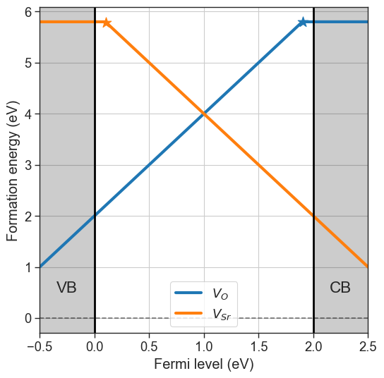
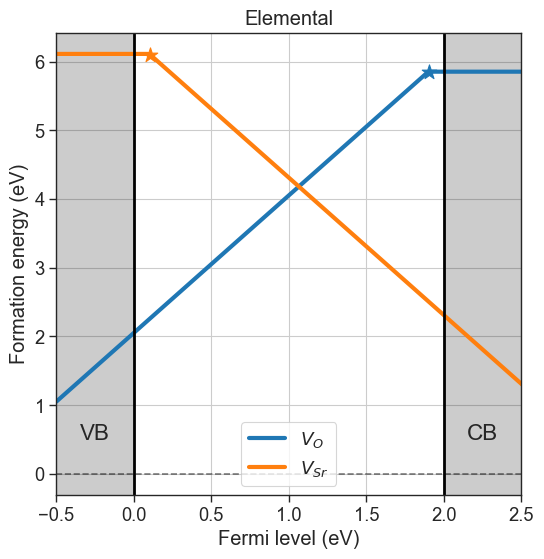
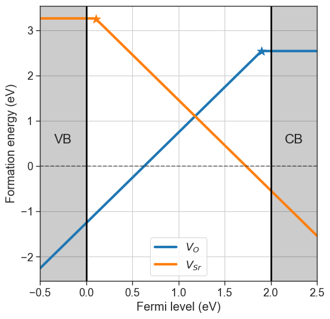
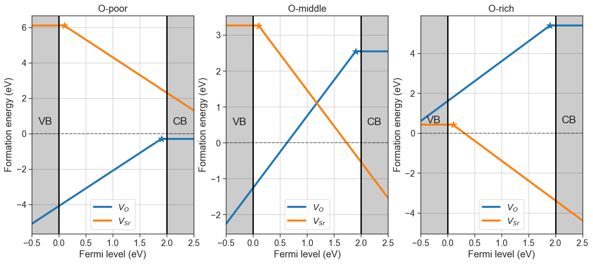
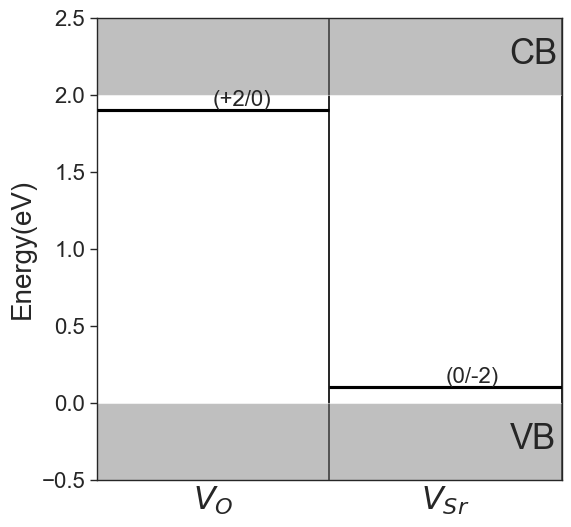

[3]:
import seaborn as sns
sns.set_context('paper',font_scale=1.5)
sns.set_style('ticks')
Formation energies#
Formation energy plots are central in the analysis of point defects. The convention is to plot the formation energies as a function of the Fermi level, showing only the charge state with lowest formation energy. You can generate the plot automatically using the DefectsAnalysis. First we initialize the class following the previous examples:
[4]:
import pandas as pd
from defermi import DefectsAnalysis
bulk_volume = 800 # cubic Amstrong
data = [
{'name': 'Vac_O','charge': 2,'multiplicity': 1,'energy_diff': 7,'bulk_volume': bulk_volume},
{'name': 'Vac_O','charge':0,'multiplicity':1,'energy_diff': 10.8, 'bulk_volume': bulk_volume},
{'name': 'Vac_Sr','charge': -2,'multiplicity': 1,'energy_diff': 8,'bulk_volume': bulk_volume},
{'name': 'Vac_Sr','charge': 0,'multiplicity': 1,'energy_diff': 7.8,'bulk_volume': bulk_volume},
]
df = pd.DataFrame(data)
da = DefectsAnalysis.from_dataframe(df,band_gap=2.0,vbm=0.0)
da
[4]:
| name | delta atoms | charge | multiplicity | corrections | |
|---|---|---|---|---|---|
| 0 | Vac_O | {'O': -1} | 0 | 1 | {} |
| 1 | Vac_O | {'O': -1} | 2 | 1 | {} |
| 2 | Vac_Sr | {'Sr': -1} | -2 | 1 | {} |
| 3 | Vac_Sr | {'Sr': -1} | 0 | 1 | {} |
For the calculation of formation energies we need to define chemical potentials for each element, following:
where:
\(E_D\) is the energy of the defective cell
\(E_B\) is the energy of the pristine cell
\(q\) is the charge
\(\epsilon_{VBM}\) is the valence band maximum
\(\epsilon_F\) is the Fermi level
\(\Delta n_i\) is the particle number difference btw defective and pristine cell
\(\mu_i\) is the chemical potential of particle \(i\)
\(E_{corr}\) are finite-size correction terms.
Chemical potentials can be defined using a dictionary, with element symbols as keys and chemical potentials as values. The formation energies are plotted using the plot_formation_energy method.
[12]:
chempots = {'O':-5,'Sr':-2}
da.plot_formation_energies(chempots);

Chemical potentials#
If chemical potentials are unknown, they can be pulled from the Materials Project. Different approaches for the choice of reservoir (set of chemical potentials) are available, which are accessed though the chemical_potentials argument in the plot_formation_energies function:
Elemental: The chemical potentials are taken from the elemental phases for each elements (e.g. from \(\mathrm{O_2}\) for oxygen). This is usually only for preliminary analysis and does not reflect experimental conditions properly. To use this option set
chemical_potentials="elemental".Target phase + condition: The reservoir choice is based on a reference phase and choosing a condition for a certain element (e.g. rich or poor). The phase diagram for the target composition is pulled from the database and the chemical potentials are selected either at the boundaries of stability for that phase, or the average between boundaries (
"middle"). The input is atuplewith the composition of the target phase (str) and the condition"{element}-rich/poor/middle", for examplechemical_potentials=("SrO","O-rich").Target phase: Chemical potentials are pulled for the target phase in all the previously mentioned conditions, and a figure with 3 formation energies plots is produced. If oxygen is present, it is chosen as the target element (e.g.
chemical_potentials="SrO").
[6]:
# Elemental chempots
da.plot_formation_energies(chemical_potentials='elemental',title='Elemental');

[7]:
# Target phase + condition
da.plot_formation_energies(chemical_potentials=('SrO','O-middle'));
Pulling chemical potentials from Materials Project database...
Chemical potentials for composition = SrO and condition = O-middle:
{'Sr': -4.535489126666666, 'O': -8.256147023333332}

[8]:
# Target phase + condition
da.plot_formation_energies(chemical_potentials='SrO',figsize=(15,6));
Pulling chemical potentials from Materials Project database...
Chemical potentials:
Sr O
O-poor -1.689493 -11.102143
O-middle -4.535489 -8.256147
O-rich -7.381485 -5.410151

These chemical potentials conditions can be visualized with the stability diagram. For each competing phase the formation energy is given by:
where \(c_s\) represents the stochiometric coefficients and \(\Delta \mu_s\) is the chemical potential of species \(s\), referenced to its elemental phase. This introduces a condition in the range of the chemical potentials for the stability of the target phase. Moreover, the stability range is further limited by the presence of competing phases. More specifically, the chemical potentials have to satisfy the condition:
where \(c.p.\) indicates any competing phase. These relations allow to determine the range of chemical potentials for which our target phase is stable. The stability range of competing phases can be visualized with pymatgen.
In our example, the O-rich condition is the boundary of stability of SrO where \(\mu_O\) is highest and coexists with \(\mathrm{SrO_2}\). Viceversa, the O-poor scenario gives the lowest \(\mu_O\) at the point of coexistence with \(\mathrm{Sr}\).
[9]:
import plotly.io as pio
pio.renderers.default = "notebook_connected"
from pymatgen.analysis.chempot_diagram import ChemicalPotentialDiagram
from defermi.tools.materials_project import MPDatabase
phase_diagram = MPDatabase().get_phase_diagram_from_chemsys('Sr-O')
ChemicalPotentialDiagram(phase_diagram.entries).get_plot()
The last generated set of chemical potentials is stored in the chempots attribute, and can be addressed as nested dictionaries.
[10]:
da.chempots
[10]:
| Sr | O | |
|---|---|---|
| O-poor | -1.689493 | -11.102143 |
| O-middle | -4.535489 | -8.256147 |
| O-rich | -7.381485 | -5.410151 |
Charge transition levels#
The charge transition level refers to the Fermi level at which the formation energy of a given defect becomes equal at charge states \(q_{1}\) and \(q_{2}\), and is given by:
In the previous formation energy plots, they are indicated by stars markers. Since by definition they are indipendent of chemical potentials, they can be plotted separately with the plot_ctl function.
[11]:
da.plot_ctl();
